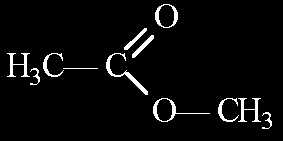
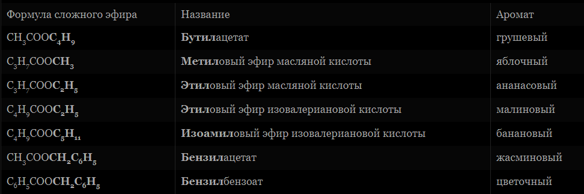

Сложные эфиры карбоновых кислот и их применение
О сложных эфирах
Сложные эфиры являются важнейшими производными карбоновых кислот, которые можно получить при взаимодействии этих кислот со спиртами.
Общая формула сложных эфиров:

В общем виде реакцию их получения можно представить так:
 Физические свойства
Физические свойства
Сложные эфиры низших карбоновых кислот (с числом атомов углерода до 8) - летучие жидкости или твёрдые вещества, плохо растворяющиеся в воде, с приятным запахом, легче воды.
Сложные эфиры высших спиртов и карбоновых кислот - твёрдые, воскоподобные вещества.
Распространение в природе
Сложные эфиры жироко распространены в природе. Ароматы цветов, ягод, плодов и других частей растений обусловлен присутствием в них сложных эфиров.
Последние являются ведущими составными частями эфирных масел (летучих веществ, которые можно выделить из определённого вида растений).
Номенклатура и изомерия
Названия сложных эфиров производятся от названий образовавших их кислот и спиртов. Например:

метилацетат (метиловый эфир уксусной кислоты)
Сложные эфиры изомерны карбоновым кислотам с тем же числом углеродных атомов.
Химические свойства
Функциональная группа сложных эфиров характеризуется наличием в ней карбонильной группы (С=О), которая и определяет химические свойства, сходные со свойствами альдегидов и карбоновых кислот.
Реакции этерификации - реакции между карбоновой кислотой и спиртом, основным продуктом которой является сложный эфир.
Реакции этого вида протекают медленно, поэтому их проводят в присутствии сильных неорганических кислот, обычно серной. Каталитическое действие оказывают ионы водорода.
Другим продуктом реакции этерификации является вода, образующаяся за счёт гидроксила карбоксильной группы кислоты и водорода группы -ОН спирта.
Гидролиз является наиболее характерной реакцией сложных эфиров. При нагревании эфира в присутствии неорганической кислоты и воды происходит его расщепление по месту связи C-O на кислоту и спирт:

Гидролиз - реакция, противоположная реакции этерификации:
Карбоновая кислота + спирт = сложный эфир + вода
Сложные эфиры вступают в реакции:
— со спиртами (реакция переэтерификации)
CH3-C(O)-O-C2H5 + CH3OH↔CH3-C(O)-O-CH3 + C2H5OH (t0, H+);
— с аммиаком
CH3-C(O)-O-C2H5 + NH3→CH3-C(O)-NH2 + C2H5OH (t0);
— галогенирования, если в составе углеводородного радикала имеются кратные связи
CH2=CH-C(O)-O-CH3 + Br2→ Br-CH2-C(Br)H-C(O)-O-CH3.
О применении сложных эфиров
Сложные эфиры широко используются в качестве растворителей, пластификаторов, ароматизаторов.
Сложные эфиры на основе низших спиртов и кислот используют в пищевой промышленности при создании искусственных эссенций, используемых в производстве фруктовых вод, кондитерских изделий,
а сложные эфиры на основе ароматических спиртов – для косметических средств, отдушек для препаратов бытовой химии.

Благодаря тому, что сложные эфиры непредельных спиртов смешиваются со многими органическими веществами, вступают в реакции присоединения по двойной связи и образуют полимеры, используются для изготовления лаков и красок и их растворителей.
Например, винилацетат - сложный эфир уксусной кислоты и винилового спирта при полимеризации образует поливинилацетат,
который используется для изготовления кожезаменителя, его еще называют винилкожей или дермантином.
Этилформиат и этилацетат используются как растворители целлюлозных лаков.
Винилацетат используется для производства поливинилацетатных смол, клеев и красок.
Сложные эфиры применяются для производства пластмасс, резины в качестве пластификаторов.
Из восков изготавливают политуры, смазки, пропиточные составы для бумаги (вощеная бумага) и кожи, они входят и в состав косметических кремов и лекарственных мазей.
В конце XIX — начале XX века, когда органический синтез делал свои первые шаги, множество сложных эфиров было синтезировано и испытано фармакологами.
Они стали основой таких лекарственных средств, как салол, валидол и др.
Как местнораздражающее и обезболивающее средство широко использовался метилсалицилат, в настоящее время практически вытесненный более эффективными средствами.
Дата\время